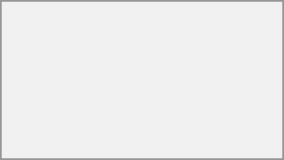

Each file and folder row has a three-dot action menu button. Click it to rename, move, copy, download, delete, or mark the item as a favorite. Files that have been marked as a favorite display a star icon:

You can quickly find all your favorites using the Favorites entry in the left sidebar.